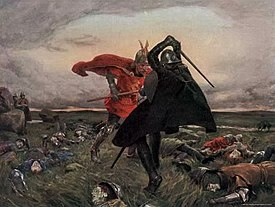

Thought to be a dark, twisted land, this is where King Arthur's army and Mordred fought to the death, in the Battle of Camlann.
When it comes down to Arthur and Mordred, Mordred manages to stab Arthur through the stomach with a spear. Incredibly, as Mordred clutches the spear, Arthur manages to wedge his body up the spear and go in for a fatal blow on Mordred! Gross, but metal.
What happens next is at the will of the author. Sometimes Arthur dies, other times he's taken to Avalon to heal. Usually, Mordred also dies here, but in some versions he survives only to be killed by Lancelot later.
Go back